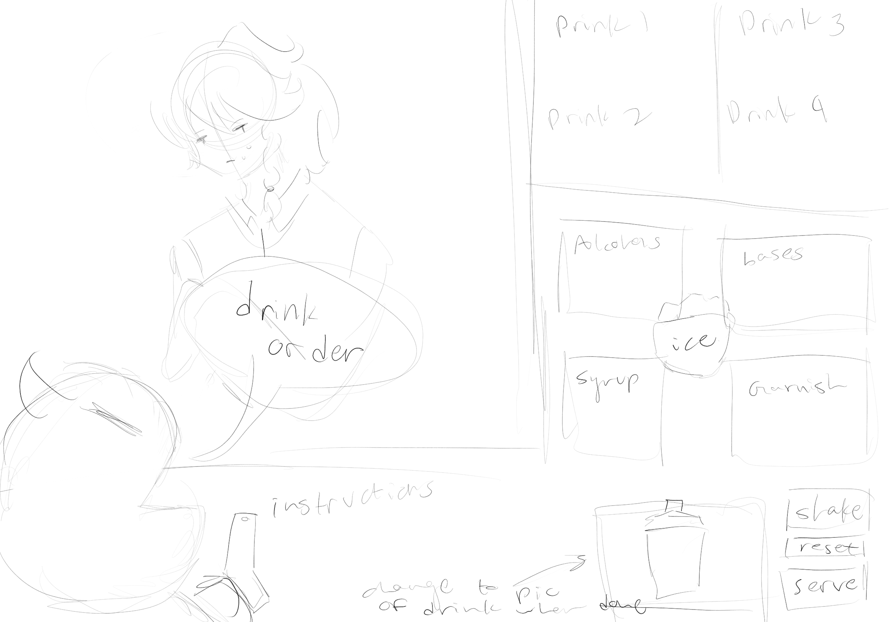
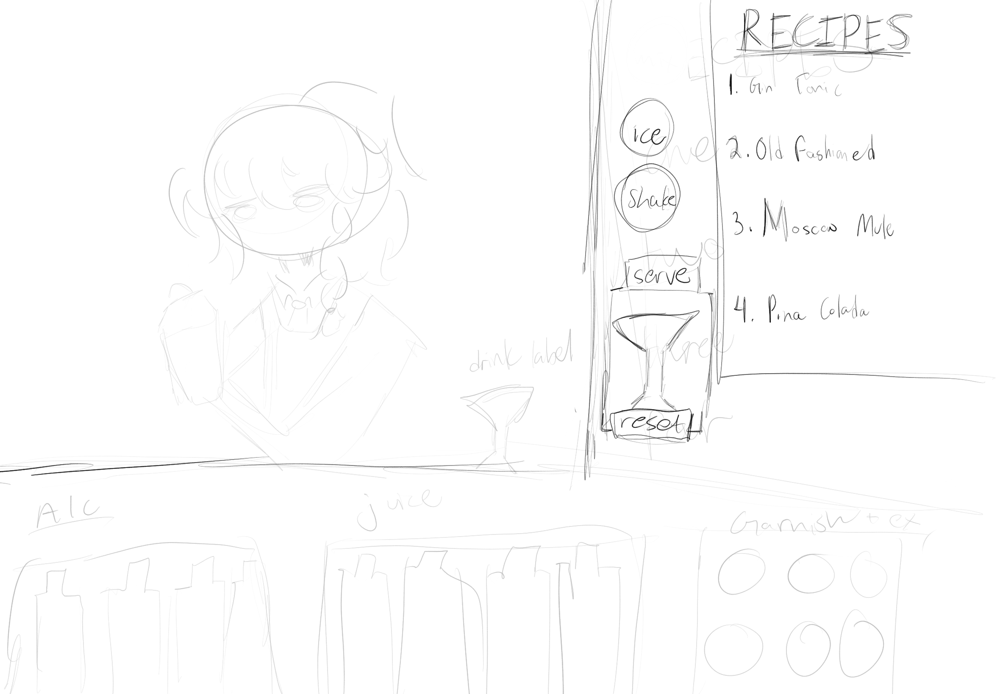
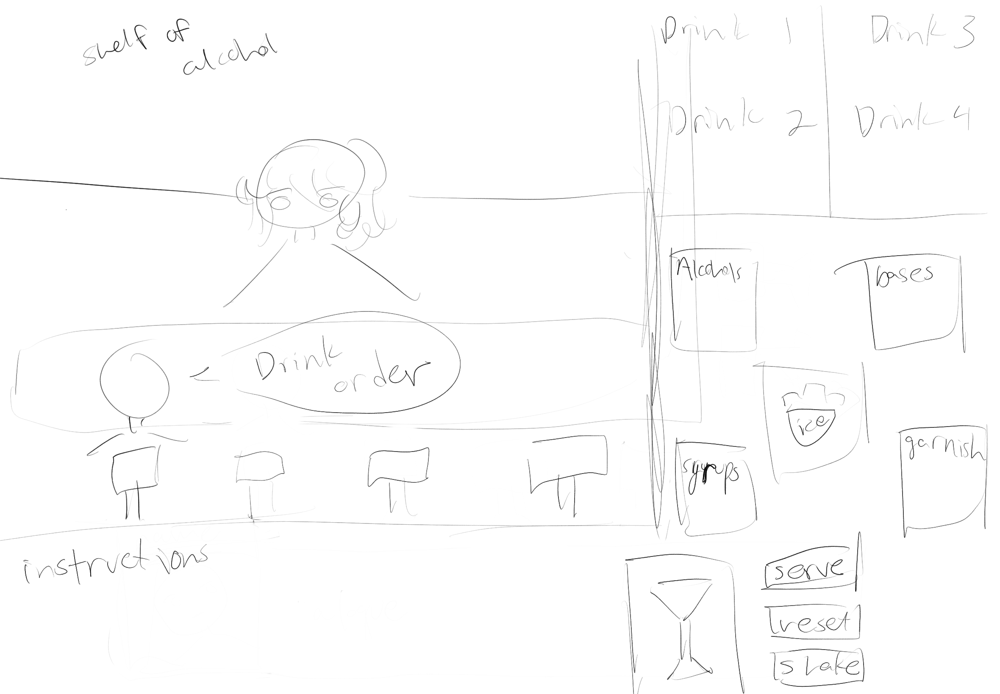

High Concept
Make drinks, have fun, and most importantly! Don’t die :)
Genre
Puzzle, Simulation
Platform
This game will be Desktop Web only.
Story
You’re the head bartender at Azuki Bar, a place known in the underground to gather information, as well as being a safe space no matter what you may be involved in… whether you’re a mafia boss or serial killer it doesn’t matter! Let’s just make drinks! Except today it seems some psychopath wants to test your knowledge…
Aesthetics
2D vector art. I want the aesthetic to definitely resemble a nice quiet/jazzy bar, however with minimal graphics (unless I have more time). The graphics will just be my art - if I have time, I’ll do fully rendered art, however I’m thinking minimal shading and my chibi style for now. The sound effects and maybe background music will accommodate this - it’d be fun to find some jazz music I can use, however I’ll focus more on small sound effects such as a drink being shaken or liquids being poured into the shaker.
Gameplay
The player can make drinks by combining different ingredients, and then choose to serve it to the customer or not. This will be done with buttons/visuals that represent the ingredients, which the player can click on with a mouse to add the ingredients. If the combo is unknown, it makes a stinky drink :). The customer won’t just ask for a specific drink - that’s too easy. The customer may ask for something strong, refreshing, sweet, etc. The instructions will be somewhere in the bottom left of the game - as shown in the mock ups. If I have time, I will make a separate page for them. The player needs to learn how to make drinks, and how to know what drink the customer wants based on the type they ask for, by analyzing the ingredients. The drinks to be made will always be open so that the player doesn’t have to memorize ingredients, however the player needs to figure out what drink is considered “strong” if thats what the customer asks for.
Mockups
  Other
Praying to the lords that this is in scope... ok but real talk this little demo is actually a part of a game I've had in the back of my mind for a while as a personal project, so... lets go lets go lets go!!
About the Developer
My name is Maya Teng, and I’m a sophomore majoring in Game Design and Development at RIT. I have skills in C#, Java, Python, and now hopefully some html… :3 Besides being a game developer, I am also an artist and editor. I use tools such as Unity, Visual Studio, Maya, Procreate, Unreal, and After Effects.